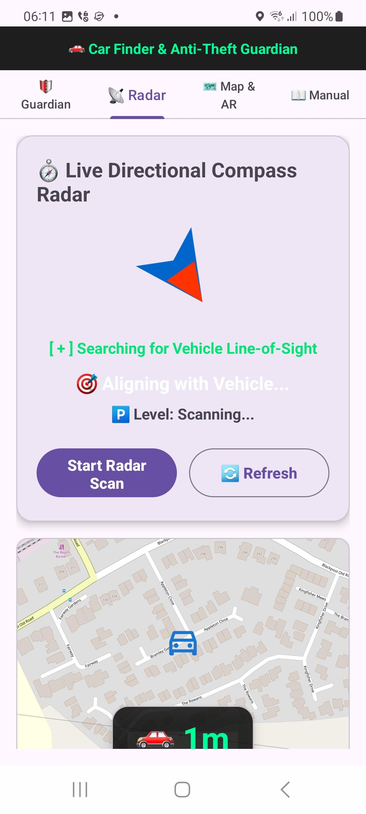

📖 Complete Step-by-Step User Manual & Field Guide
1. Home Anti-Theft Guardian & Bluetooth Pairing (Free Edition)
Protect your vehicle parked on your driveway without any extra hardware:
- Step 1 (Wi-Fi): Open the Guardian tab and tap 'Scan & Select Home Wi-Fi' to select your home network SSID.
- Step 2 (Bluetooth How-To): Almost all cars 2018+ have built-in Bluetooth (older cars can use an adapter). Turn on your car ignition, open your phone's Android Settings ➔ Bluetooth, and pair your car audio (e.g. Renault R-LINK, Ford SYNC). Note: This can be a Bluetooth connection of any type (handsfree calls or media audio). As long as your phone connects when starting the engine, Guardian protects your car!
- Step 3 (Select Car): Tap 'Find & Connect Car Bluetooth' (or the How-To guide button) to select your car from your paired list.
- Step 4 (Enable): Tap 'Save Settings', then toggle 'Enable Home Guardian' to ON.
- Test Alarm: Tap 'Test Alarm' anytime to test the full-screen red warning banner, alarm sound, and text-to-speech voice prompt (*"Warning! Car theft detected!"*).
- Custom Alarm Sound: Tap '🎵 Choose Custom Alarm Sound' to pick any custom warning sound or ringtone from your phone's built-in audio picker.
- Export & Import Credentials: Use the Export / Import buttons to securely back up or restore your encrypted Wi-Fi and Bluetooth setup string instantly (with auto-clipboard detection for imports).
2. Map & AR Line-of-Sight Compass (PRO Suite — Step 1 When Parking)
Mark your car's location when you park and navigate back with visual crosshairs:
- Step 1: When you arrive at your destination and park your car, open the Map & AR tab and tap '📍 Mark Parked Car Here' to lock in your coordinates.
- Step 2: Watch the extra-large 32sp distance overlay (e.g. 🚗 12m) right on the OpenStreetMap view when returning.
- Step 3: Rotate your phone until crosshairs turn Bright Neon Green (🟢 100% LINE OF SIGHT ACQUIRED) pointing straight to your vehicle.
3. Wi-Fi Parking Radar & Level Detector (PRO Suite — Step 2 Underground)
Find your way back in multi-story or underground car parks where GPS is unavailable:
- Step 1: Ensure you already marked your car's location on the Map tab (Step 1 above) before entering underground parking.
- Step 2: When returning in a multi-story or underground car park, open the Radar tab and tap 'Start Radar Scan' to measure RSSI signal proximity and detect underground parking floor levels (-1, Basement, Street Level).
- Step 3: Follow the large rotating compass arrow pointer and directional turn instructions (e.g., 'Turn Right 45°').
- Step 4: Tap '🔄 Refresh' anytime to reset the radar scanner.
4. PRO Suite & 3-Day Free Trial
Home Guardian is 100% Free forever. Advanced features (Radar & AR Compass) are part of the Pro Suite:
- Start a 3-Day Free Trial anytime by tapping any Pro tab.
- Upgrade to Lifetime Pro (£7.99) or Monthly Subscription (£2.99/mo).

1. Home Guardian
Home Wi-Fi & Car Bluetooth driveway protection.

2. Map & AR Compass
Mark parked car, giant distance & line-of-sight.

3. Parking Radar
Compass pointer & underground floor detector.

4. User Manual
In-app comprehensive field guide.

5. PRO Suite
3-day trial & flexible upgrade options.